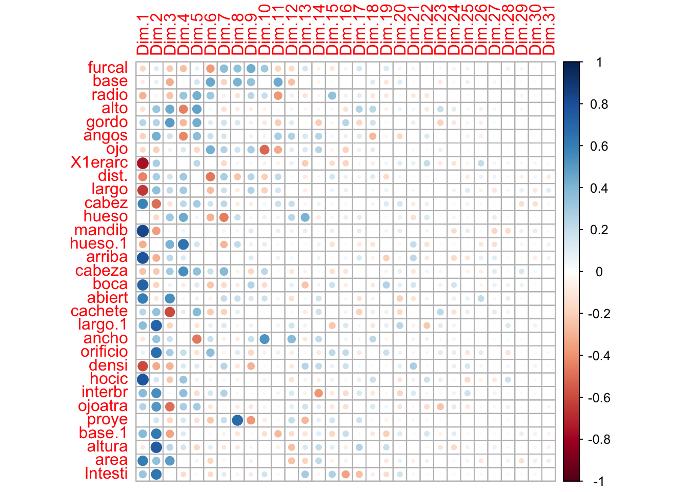

library(ggplot2)
library(vegan)
library(ggdendro)
library(dendextend)
library(FactoMineR)
library(factoextra)
library(ggrepel)15 Aprendizaje No Supervisado
15.1 Librerías
15.2 Introducción
En el Capítulo 14 hablamos de que en el aprendizaje no supervisado vamos a extraer patrones o grupos contenidos en los datos, lo cual podemos hacer mediante la reducción de la dimensionalidad o formando agrupaciones. Bueno, hablemos a fondo de ambas y veamos algunas técnicas.
15.3 Agrupamientos
Empecemos por lo “sencillo”: formar agrupaciones. ¿Por qué las comillas? Para responder a esa pregunta pongamos un ejemplo. Observa la siguiente imagen y dime: ¿cuántos grupos formarías? ¿qué “bicho” entra en cuál grupo?
Una forma de hacerlo es poner a las mariposas/polillas en un grupo, los caracoles en otro, las arañas en otro y las abejas en otro:
Fue bastante sencillo, ¿no? A los seres humanos no nos resulta especialmente complicado categorizar, pero para la computadora hay un total de 115,975 combinaciones de estas imágenes. ¿Cómo saber cuáles son las agrupaciones relevantes? Hay una gran variedad de técnicas: Agrupamientos jerárquicos, máquinas de soporte vectorial, k-medias (k-medianas o k-medioides), DBSCAN, T-SNE, entre otras, cada una con sus peculiaridades, ventajas y desventajas, dadas por la lógica con la que trabajan y, en consecuencia, con diversos niveles de “éxito” según los datos con los que estemos trabajando:

15.3.1 Agrupamiento jerárquico
De toda esta diversidad de técnicas hay una que se ha destacado en el área de la biología: el agrupamiento jerárquico, también llamado análisis clúster. Esta técnica tiene una lógica muy sencilla e intuitiva (lo cual es parte de la razón por la que sea tan popular): Calcula una distancia entre todos los pares de observaciones, forma un grupo con el par con la menor distancia y repite hasta que termines con todos los datos. Veamos cómo es esto paso a paso con unos datos de ejemplo:
| Especie | Longitud total (m) |
|---|---|
| Tursiops truncatus (Tt) | 3 |
| Grampus griseus (Gg) | 3.6 |
| Globicephala macrorhyncus (Gm) | 6.5 |
| Orcinus orca (Oo) | 7.5 |
| Megaptera novaeangliae (Mn) | 15 |
| Balaenoptera physalus (Bp) | 20 |
Entonces los pasos con los que agruparíamos estas especies, según su longitud total, son:
- Calcular una matriz de distancias/disimilaridades. Literalmente ver qué tanto se parecen nuestras especies entre sí. ¿Cómo hacemos esto? Utilizando alguna medida de distancia o disimilaridad, pero dejemos el tema de la selección de la medida para después y utilicemos la distancia Euclidiana:
Nota
¿Qué es la distancia Euclidiana? Es una medida basada en el famosísimo teorema de Pitágoras ((¿creías que no servía para nada?):
\[D_{a,b} = \sqrt\sum_{i = 1}^n (q_i - p_i)^2\]
Esta medida de distancia representa también la geometría que utilizamos en el día a día, por lo que la interpretación en casos univariados es directa, representando las unidades de diferencia que hay entre una observación y otra.

Identificar el par con la menor distancia y formar un grupo con ellos. Esto corresponde al método de unión (agrupamiento o amalgamiento) simple o sencillo, en el que encontramos la menor distancia en la matriz, que corresponde a
TtyGg(\(D = 0.6\)), por lo que formamos un primer grupo[Tt, Gg], el cual estará representado por el promedio deTtyGg:3.3.Volver a calcular la matriz de distancias/disimilaridades, sustituyendo las observaciones agrupadas por su grupo; es decir, ahora ya no vamos a incluir
TtyGgen el cálculo de la matriz, sino que incluiremos[Tt, Gg] = 3.3:
- Repetir 2 y 3 hasta haber agrupado todas las observaciones.
Al final tenemos nuestro agrupamiento jerárquico [[[Tt, Gg], [Gm, Oo]], [Mn, Bp]]. ¿Por qué jerárquico? Porque tenemos grupos dentro de otros grupos. El grupo [Tt, Gg], por ejemplo, forma parte de un grupo más grande, donde se une con el grupo [Gm, Oo] y este grupo de grupos, a su vez, es parte de otro grupo más grande, donde se une con [Mn, Bp]. Ahora bien, esta notación es compacta, pero puede ser muy incómoda de leer si tenemos una gran cantidad de datos, por lo que en su lugar utilizamos una estructura conocida como dendrograma.
15.3.2 El dendrograma
Un dendrograma es una visualización de datos en la que se muestra al mismo tiempo las agrupaciones y las distancias a las que se unieron simulando el crecimiento de las ramas de un árbol por lo que podemos ver no solo quiénes forman qué grupos, sino que tan parecidos son los miembros de cada uno y qué tan diferentes son con los demás grupos. El dendrograma resultante de nuestro ejemplo es el siguiente:
Como ves en la figura Figura 15.8, nuestro dendrograma está compuesto por algunas estructuras:
- Raíz: Es la distancia a la que se unen todos nuestros grupos. En nuestro ejemplo falta porque no tenemos un “grupo hermano”; es decir, un grupo que sea cercano a nuestras especies de cetáceos, pero que no sea un cetáceo. Podríamos incluir un hipopótamo, por ejemplo. Si tenemos ese grupo hermano podemos graficar la raíz, y entonces nuestro dendrograma estará enraizado, de lo contrario tenemos un dendrograma no enraizado. El árbol comienza a “crecer” desde este punto (un solo grupo) hasta tener separados todos los puntos en el conjunto de datos.
- Ramas: Cada una de las líneas verticales del árbol. Indican el “flujo” de las similaridades, en el sentido de que seguirán extendiéndose hasta la distancia en la que se forme una nueva agrupación.
- Nodo: Es el punto donde se unen dos ramas; es decir, el punto en el que se forma una nueva agrupación.
- Hojas: Son las “ramas terminales”, que se puede entender como un grupo de ramas que representan cada una de las instancias que conforman la base de datos. Las instancias más parecidas son las contiguas, y el parecido disminuye conforme nos alejamos de cada punto.
- Clúster: Es un conjunto de hojas. ¿Cómo lo definimos? Esa pregunta merece que le dediquemos tiempo, pero primero hablemos de otros dos conceptos que dictan la forma final de nuestro dendrograma.
15.3.3 Hablemos de distancias
Como te darás cuenta, es un proceso iterativo y que puede llevar bastante tiempo, pero también es bastante sencillo. Ahora bien, ¿qué medidas de distancia/disimilaridad hay y cuál utilizar? Resulta que la medida de distancia que seleccionemos determina la geometría del espacio en el que estamos haciendo el análisis. ¿La qué cosa de quien? Es más fácil entenderlo si te digo que un triángulo trazado en un papel tiene una sumatoria de sus ángulos diferente a un triángulo trazado en una esfera. Un ejercicio que puedes realizar para ver las consecuencias de moverse en diferentes espacios geométricos es, justamente, trazar un triángulo sobre una naranja, después retirarle la cáscara, ponerla sobre una superficie plana, y ver qué pasa con el triángulo que trazaste originalmente. Otra forma es una representación visual. En la Figura 15.9 tienes representadas tres distancias: la distancia Euclidiana (amarillo), Manhattan (rojo) y Chebyshev (azul). En todos los casos la distancia desde cualquier punto del perímetro hacia el centro es de 4 unidades, pero la forma resultante es diferente porque el espacio geométrico es diferente:
Esto, obviamente tiene consecuencias, y hace que algunas distancias o disimilaridades funcionen mejor en ciertos casos y peor en otros. Shirkhorshidi, Aghabozorgi & Wah (2015) compilaron la siguiente lista, con algunas distancias y detalles muy útiles sobre su aplicación:
¿Cuál utilizar? Como ves en la Figura 15.10, depende de la naturaleza de tus datos pero, por lo general, la distancia Euclidiana es un buen punto de partida.
15.3.4 Métodos de unión
La otra cosa que debemos de decidir es el criterio bajo el cuál vamos a unir nuestros grupos. En el ejercicio con nuestros cetáceos utilizamos el método simple/sencillo, pero no es el único. En todos los métodos se busca minimizar algo, la diferencia es el qué se minimiza. Tomemos el siguiente problema, donde queremos unir el punto solitario con algo de los otros clústers:
- Simple: También llamado sencillo o método del “vecino más cercano”, en el que se minimiza la separación mínima entre clústers; es decir, vamos a calcular la matriz de distancias y formar una agrupación con los grupos que tengan los puntos con la menor distancia:
- Completo: También lo puedes encontrar como el método del “vecino más lejano”, porque minimiza la separación máxima entre clústers; es decir, se calcula la matriz de distancias, se seleccionan los puntos de cada grupo entre los que se encuentra la distancia, y de esos se agrupan los que tengan la menor. ¿Rebuscado? Sin duda, pero gráficamente es más sencillo:
- Centroide: Si en el método simple se minimiza la separación mínima entre clústers, y en el método completo la separación máxima, debe de haber un punto intermedio. El método del centroide minimiza la distancia entre los puntos centrales de los clústers:
Promedio: En este se minimiza la distancia promedio entre clústers; es decir, calcula todas las distancias entre los puntos, obtiene el promedio de la distancia por cada par de grupos, y forma uno nuevo con los grupos/puntos que resultaron en la menor distancia promedio.
Ward: Este es un poco más abstracto, pues minimiza la suma de cuadrados del error (ESS) o, en otras palabras, la varianza de los grupos resultantes. Es decir que primero agrupa cada par de grupos disponible, calcula la varianza resultante y se queda con la agrupación que tenga la menor.
¿Cómo decidir cuál utilizar? Este es un análisis no supervisado, por lo que no podemos utilizar algún criterio matemático para definir si nuestra selección de distancia/método de unión es la correcta. Lo que sí podemos hacer es ver si tienen sentido las agrupaciones resultantes, lo cual me lleva a la siguiente parte.
15.3.5 ¿Cuántos grupos?
Ahora sí, ¿con qué magia obscura determinamos cuántos grupos tenemos y quién pertenece a cuál? La forma es muy sencilla desde el punto de vista práctico: seleccionar un nivel de corte en nuestro dendrograma; es decir, una distancia en la cual el árbol deja de exenderse, y el número de grupos está dado por el número de ramas inmediatamente debajo:
Nuevamente, este es un análisis no supervisado, por lo que no tenemos etiquetas de grupos para evaluar el agrupamiento; sin embargo, podemos utilizar distintas medidas (30, de hecho) para estimar el nivel de corte. ¿Cuántas? 30, por ejemplo, y luego formar un ensamble; es decir, tomar el voto mayoritario; es decir, quedarnos con el número de agrupaciones que tenga el mayor número de “votantes”. El último “sello de garantía” de un análisis clúster es el coeficiente de correlación cofenética, el cuál es una medida de lo bien o mal representadas que están las distancias reales en el dendrograma.
15.3.6 Implementación
Realizar un agrupamiento jerárquico en R es bastante sencillo, únicamente debemos de tener nuestro data.frame cuyos nombres de renglones sean las etiquetas de nuestras instancias a agrupar, calcular las distancias con la función dist(x, method) y unir los grupos con la función hclust(dist, method).
df1 <- data.frame(long = c(3, 3.6, 6.5, 7.5, 15, 20),
row.names = c("Tt", "Gg", "Gm", "Oo", "Mn", "Bp"))
dist_mat <- dist(df1, method = "euclidean")
hc_av <- hclust(dist_mat, method = "average")Este objeto podemos graficarlo con ggplot, utilizando la librería ggdendro, lo cual nos da un dendrograma bastante sencillo:
ggdendrogram(hc_av, labels = T) +
theme_bw() +
labs(x = element_blank(),
y = "Distancia Euclidiana")
Si bien es cierto que este dendrograma es “suficiente”, podemos personalizarlo utilizando la función dendextend::set(object, what, value):
# Transformamos los agrupamientos a un dendrograma
dend <- as.dendrogram(hc_av)
# Cambiamos el color a las ramas
dend <- set(dend, "branches_k_color",
value = "deepskyblue4",
k = 1)
# Cambiamos el ancho de las ramas
dend <- set(dend, "branches_lwd", 1)
# Cambiamos el color de las etiquetas asumiendo 4 grupos
dend <- set(dend, "labels_col",
value = c(rgb(0,118, 186, maxColorValue = 255),
rgb(0, 123, 118, maxColorValue = 255),
rgb(255, 147, 0, maxColorValue = 255),
rgb(181, 23, 0, maxColorValue = 255)),
k = 4)Con estas líneas añadimos las características visuales que queremos que tenga el dendrograma, pero falta graficarlo utilizando ggplot:
gg_dend <- as.ggdend(dend)
gg_dendro <- ggplot(gg_dend,
offset_labels = -1,
theme = theme_bw()) +
ylim(-2.4, max(get_branches_heights(dend))) +
scale_x_continuous(breaks = NULL) +
labs(title = "Dendrograma de especies de cetáceos",
subtitle = "Agrupamientos por longitud (método: promedio)",
x = element_blank(),
y = "Distancia euclidiana",
caption = "Datos de bit.ly/clust_medium")
gg_dendro
Nota
Si te das cuenta, solo indicamos en set(dend, labels_col) que tenemos cuatro grupos y pasamos un vector con cuatro colores, los cuales se asignaron en nuestro dendrograma. ¿Cómo supo dendextend quién iba en qué grupo? Recuerda que lo que buscamos es un nivel de corte en el dendrograma, por lo que solo hay una forma de agrupar los datos en la que tenemos cuatro grupos resultantes.
Ahora bien, esta es una técnica bastante sencilla de implementar (la mayor parte del “engorro” la hicimos al graficar), pero eso no quiere decir que debamos utilizarla a diestra y siniestra sin tener cuidado de qué datos le damos a R. Es necesario que nuestras variables estén aproximadamente en la misma escala (unidades, decenas, milésimas, etc.), pues de lo contrario las variables con las magnitudes más grandes van a llevar un mayor peso durante la agrupación. Por otro lado, también hay que tener cuidado con variables que estén muy sesgadas, pues esa distribución va a modificar el cálculo de las distancias y, por lo tanto, los agrupamientos finales.
15.3.7 Ejercicio multivariado
Ya sabemos cómo funciona el análisis de ahrupamientos y también cómo implementarlo en R. ¿Qué falta? Aplicarlo con un conjunto de datos con más observaciones y variables. Para esto utilizaremos los datos cluster.txt, en los cuales tenemos mediciones de variables ambientales en distitntos sitios de muestreo, y nuestro objetivo es agrupar aquellos que tengan caracterísiticas similares. Si vemos el resumen de los datos podemos ver que hay diferencias sumamente importantes en las escalas de las variables, por lo que será necesario escalar los datos:
clust_df <- read.table("datos/cluster.txt",
header = T, row.names = 1) # ¡OJO con row.names!
summary(clust_df) Temp NH4 NO3 OD Prof
Min. :16.90 Min. :0.540 Min. :0.400 Min. :0.810 Min. : 27
1st Qu.:18.20 1st Qu.:0.900 1st Qu.:1.830 1st Qu.:2.650 1st Qu.: 76
Median :19.60 Median :0.980 Median :2.500 Median :3.800 Median :122
Mean :20.31 Mean :1.047 Mean :2.394 Mean :4.103 Mean :109
3rd Qu.:21.40 3rd Qu.:1.250 3rd Qu.:3.120 3rd Qu.:5.840 3rd Qu.:148
Max. :25.80 Max. :1.570 Max. :4.210 Max. :8.010 Max. :199
Trans Caud SST STD
Min. : 4.00 Min. : 0.520 Min. : 4.0 Min. : 86.9
1st Qu.: 6.00 1st Qu.: 1.960 1st Qu.: 50.0 1st Qu.:101.5
Median :10.00 Median : 5.580 Median : 134.0 Median :104.3
Mean :17.62 Mean : 5.877 Mean : 254.3 Mean :108.7
3rd Qu.:18.00 3rd Qu.: 8.100 3rd Qu.: 298.7 3rd Qu.:113.7
Max. :56.00 Max. :15.440 Max. :1163.3 Max. :137.7
PO4 DBO5 DQO
Min. :0.000 Min. :20.21 Min. : 5.00
1st Qu.:0.250 1st Qu.:21.29 1st Qu.:16.00
Median :0.400 Median :23.27 Median :32.00
Mean :0.391 Mean :27.45 Mean :32.52
3rd Qu.:0.600 3rd Qu.:32.62 3rd Qu.:50.00
Max. :0.870 Max. :59.82 Max. :62.00 Además de las diferencias en órdenes de magnitud, tenemos otro problema no tan evidente: la distribución de SST se encuentra bastante sesgada, por lo que habrá que a) aplicar una transformación para “normalizar” los datos o b) retirarla del análisis. No sabemos a qué corresponde SST, por lo que no sabemos si las mediciones están bien o mal, por lo que es mejor errar por precavidos y retirarla del análisis.
mask <- colnames(clust_df)[colnames(clust_df) != "SST"]
clust_filt <- clust_df[, mask]
colnames(clust_filt) [1] "Temp" "NH4" "NO3" "OD" "Prof" "Trans" "Caud" "STD" "PO4"
[10] "DBO5" "DQO" Ahora sí, podemos escalar todos nuestros datos. Si observamos el resumen es evidente que hay algunas otras variables que también están sesgadas; sin embargo, podemos utilizar una medida de distancia que contienda con este tipo de distribuciones para evitar una transformación más agresiva:
clust_scale <- scale(clust_filt)
summary(clust_scale) Temp NH4 NO3 OD
Min. :-1.315 Min. :-1.8357 Min. :-1.9515 Min. :-1.4896
1st Qu.:-0.814 1st Qu.:-0.5326 1st Qu.:-0.5518 1st Qu.:-0.6573
Median :-0.275 Median :-0.2430 Median : 0.1039 Median :-0.1370
Mean : 0.000 Mean : 0.0000 Mean : 0.0000 Mean : 0.0000
3rd Qu.: 0.418 3rd Qu.: 0.7343 3rd Qu.: 0.7108 3rd Qu.: 0.7859
Max. : 2.112 Max. : 1.8926 Max. : 1.7776 Max. : 1.7675
Prof Trans Caud STD
Min. :-1.5885 Min. :-0.8294 Min. :-1.19044 Min. :-1.4307
1st Qu.:-0.6393 1st Qu.:-0.7076 1st Qu.:-0.87045 1st Qu.:-0.4734
Median : 0.2518 Median :-0.4640 Median :-0.06603 Median :-0.2898
Mean : 0.0000 Mean : 0.0000 Mean : 0.00000 Mean : 0.0000
3rd Qu.: 0.7555 3rd Qu.: 0.0232 3rd Qu.: 0.49395 3rd Qu.: 0.3266
Max. : 1.7435 Max. : 2.3373 Max. : 2.12502 Max. : 1.9003
PO4 DBO5 DQO
Min. :-1.45097 Min. :-0.7880 Min. :-1.43661
1st Qu.:-0.52313 1st Qu.:-0.6704 1st Qu.:-0.86246
Median : 0.03358 Median :-0.4548 Median :-0.02734
Mean : 0.00000 Mean : 0.0000 Mean : 0.00000
3rd Qu.: 0.77585 3rd Qu.: 0.5631 3rd Qu.: 0.91217
Max. : 1.77792 Max. : 3.5244 Max. : 1.53851
Nota
Recuerda que si trabajamos con datos estandarizados estamos escalando nuestros datos a valores de una distribución Z, los cuáles representan a cuántas desviaciones estándar estamos de la media.
Ahora realicemso los agrupamientos utilizando la distancia Mahalanobis (que no es tan sensible a valores extremos) y el método de unión Ward.D2 (unión Ward con distancias cuadráticas) para minimizar la varianza intra-grupos:
dist_mv1 <- vegdist(clust_scale, method = "mahalanobis")
hc_mv1 <- hclust(dist_mv1, method = "ward.D2")
# Transformamos a dendrograma
dend_mv1 <- as.dendrogram(hc_mv1)
# Cambiamos el color de las ramas
dend_mv1 <- set(dend_mv1, "branches_k_color",
value = "deepskyblue4",
k = 1)
# Cambiamos el ancho de las ramas
dend.mv1 <- set(dend_mv1, "branches_lwd", 0.7)
# Graficado
ggd1 <- as.ggdend(dend_mv1)
ggd1_plot <- ggplot(ggd1, offset_labels = -1, theme = theme_bw()) +
expand_limits(y = -2.4) +
scale_x_continuous(breaks = NULL) +
scale_y_continuous(breaks =
seq(0,max(get_branches_heights(dend_mv1)),
2)) +
labs(title = "Dendrograma de sitios de muestreo",
subtitle = "Método de agrupamiento: Ward.D2",
x = element_blank(),
y = "Distancia Mahalanobis",
caption = "Datos: clust.txt")
ggd1_plot
¿Puedes decirme cuántos grupos hay? Veamos qué pasa si utilizamos la distancia Euclidiana:
dist_mv2 <- vegdist(clust_scale, method = "euclidean")
hc_mv2 <- hclust(dist_mv2, method ="ward.D2")
# Transformemos nuestro objeto a un dendrograma:
dend_mv2 <- as.dendrogram(hc_mv2)
# Cambiemos el color a las ramas:
dend_mv2 <- set(dend_mv2, "branches_k_color",
value = "deepskyblue4",
k = 1)
dend_mv2 <- set(dend_mv2, "branches_lwd", 0.7)
ggd2 <- as.ggdend(dend_mv2)
ggd2_plot <- ggplot(ggd2, offset_labels = -1, theme = theme_bw()) +
expand_limits(y = -2.4) +
scale_x_continuous(breaks = NULL) +
scale_y_continuous(breaks =
seq(0,
max(get_branches_heights(dend_mv2)),
2)) +
labs(title = "Dendrograma de sitios de muestreo",
subtitle = "Método de agrupamiento: Ward.D2",
x = element_blank(),
y = "Distancia Euclidiana",
caption = "Datos: clust.txt")
ggd2_plot¿Y con la distancia Manhattan? Las agrupaciones resultantes son similares; sin embargo, las medidas de distancia son muy diferentes. Entonces, arbitrariamete, nos quedaremos con la distancia Euclidiana.
dist_mv3 <- vegdist(clust_scale, method = "manhattan")
hc_mv3 <- hclust(dist_mv3, method ="ward.D2")
# Transformemos nuestro objeto a un dendrograma:
dend_mv3 <- as.dendrogram(hc_mv3)
# Cambiemos el color a las ramas:
dend_mv3 <- set(dend_mv3, "branches_k_color",
value = "deepskyblue4",
k = 1)
dend_mv3 <- set(dend_mv3, "branches_lwd", 0.7)
ggd3 <- as.ggdend(dend_mv3)
ggd3_plot <- ggplot(ggd3, offset_labels = -1, theme = theme_bw()) +
expand_limits(y = -3.5) +
scale_x_continuous(breaks = NULL) +
scale_y_continuous(breaks =
seq(0,max(get_branches_heights(dend_mv3)),
5)) +
labs(title = "Dendrograma de sitios de muestreo",
subtitle = "Método de agrupamiento: Ward.D2)",
x = element_blank(),
y = "Distancia Manhattan",
caption = "Datos: clust.txt")
ggd3_plot15.3.8 ¿Cuántos grupos?
Para calcular los 30 índices de los que podemos echar mano para estimar el número “óptimo” de agrupaciones utilizaremos la función NbClust de la librería con el mismo nombre. La salida de esta función nos dice el número de índices que proponen cada número de agrupamientos (4 propusieron 12, 11 propusieron 3, etc.) y una conclusión: “De acuerdo con la regla de la mayoría, el mejor número de clústers es 3”. Además de estos índices numéricos tenemos dos índices gráficos: Hubert y D. En ambos el número óptimo está dado por una “rodilla” (un punto de inflexión).
n_gps <- NbClust::NbClust(data = clust_scale,
diss = dist_mv2,
distance = NULL,
method = "ward.D2",
index = "all", max.nc = 8)*** : The Hubert index is a graphical method of determining the number of clusters.
In the plot of Hubert index, we seek a significant knee that corresponds to a
significant increase of the value of the measure i.e the significant peak in Hubert
index second differences plot.
*** : The D index is a graphical method of determining the number of clusters.
In the plot of D index, we seek a significant knee (the significant peak in Dindex
second differences plot) that corresponds to a significant increase of the value of
the measure.
*******************************************************************
* Among all indices:
* 4 proposed 2 as the best number of clusters
* 11 proposed 3 as the best number of clusters
* 1 proposed 5 as the best number of clusters
* 2 proposed 7 as the best number of clusters
* 5 proposed 8 as the best number of clusters
***** Conclusion *****
* According to the majority rule, the best number of clusters is 3
*******************************************************************
Nota
Algunas peculiaridades a la cuáles poner atención: la función a) recibe los datos a agrupar (después de cualquier procesado); b) puede recibir o la matriz de distancias (diss) o calcularla internamente (distance = "method"); c) podemos decir qué índice queremos utilizar con el argumento index (todos con index = "all"); y d) hay que definir un número máximo de clústers a evaluar. Este número debe de ser lo suficientemente grande para permitir al algoritmo probar distintas cantidades de agrupaciones y lo suficientemente pequeño para seguir siendo interpretable. En este cso tenemos 21 sitios, por lo que tener 10 o más grupos pudiera ya no tener caso.
Ya tenemos nuesro número de grupos (\(k = 3\)), pero ¿podemos confiar en nuestro dendrograma? Calculemos el coeficiente de correlación cofenético:
ccc <- cophenetic(hc_mv2)
# Correlación entre distancias reales y graficadas
ccofen <- cor(dist_mv2, ccc, method = "spearman")
ccofen[1] 0.6868661Fue de prácticamente el 70%, que para nuestros objetivos es suficiente. Ahora veamos nuestros grupos en el dendrograma:
# Cambiamos el color de nuestr
dend_mv2 <- set(dend_mv2, "labels_col",
value = 1:3,
k = 3)
dend_mv2 <- set(dend_mv2, "branches_k_color",
value = 1:3,
k = 3)
dend_mv2 <- set(dend_mv2, "branches_lwd", 0.7)
ggd2 <- as.ggdend(dend_mv2)
ggd2_plot <- ggplot(ggd2, offset_labels = -1, theme = theme_bw()) +
expand_limits(y = -2.4) +
scale_x_continuous(breaks = NULL) +
scale_y_continuous(breaks = seq(0,max(get_branches_heights(dend_mv2)),2)) +
labs(title = "Dendrograma de sitios de muestreo",
subtitle = "Método de agrupamiento: Ward.D2",
x = element_blank(),
y = "Distancia Euclidiana",
caption = "Datos: clust.txt")
ggd2_plot¿Cómo podemos interpretar este dendrograma? Hay un montón de maneras, pero todas se reducen a ver cómo se relacionan estos grupos con las variables originales; es decir, no vamos a simplemente asumir que tenemos una zona alta, intermedia y baja del río solo porque en un grupo tengamos los primerios sitios, en otro los que le siguen, y en un último los faltantes. Esos son cuentos chinos. Una forma es revisar los centroides (promedios) de cada variable por cada grupo:
aggregate(clust_filt, by = list(n_gps$Best.partition), FUN = mean)Esto evidencía gradientes en cada variable, algunos positivos (Temp, NH4, por ejemplo) y algunos negativos (e.g., NO3, OD). ¿Qué quiere decir esto? Bueno, esa interpretación ya depende del conocimiento que tengamos del área (tanto del conocimiento como del área geográfica).
15.4 Reducción de la dimensionalidad
Hablemos ahora de la otra parte del aprendizaje no supervisado: la reducción de la dimensionalidad. Una manera “sencilla” de entenderla es lo que pasa cuando nosotros nos ponemos al sol (somos tridimensionales) y vemos nuestra sombra (un plano): perdemos los detalles más finos, pero nuestra estructura general se mantiene. Con nuestros datos multidimensionales haremos algo similar (Figura 15.16): proyectar datos multidimensionales a un espacio con menos dimensiones (usualmente una o dos).
Infortunadamente para nosotros, el proceso de reducir dimensiones no es tan sencillo como ir poniendo las coordenadas de dimensiones enteras en 0, pero antes de entrar a ver el cómo, veamos el por qué, utilizando una de las aplicaciones más famosas: el índice multivariado del ENSO.
15.4.1 Índice Multivariado del ENSO
Si eres parte de alguna carrera de ciencias marinas es muy posible que hayas escuchado del fenómeno del Niño, si no, aprenderás algo interesante. Su nombre completo es “El Niño Oscilación del Sur” (El Niño Southern Oscilation, ENSO; Figura 15.17), y hace referencia a un fenómeno de variabilidad ambiental interanual que tiene una fase cálida (“El Niño”) y una fase fría (“La Niña”).
Durante la fase fría (condiciones “normales”) los vientos alisios soplan con fuerza del este al oeste en el ecuador, arrastrando consigo la capa superficial del océano y acumulando agua en las costas del Pacífico central occidental. Como sabrás, el ecuador recibe la mayor cantidad de calor solar, por lo que el agua arrastrada es agua caliente, haciendo que la termoclina sea más profunda en el occidente que en el oriente del Pacífico. Esto permite que haya una surgencia costera (emergimiento de agua profunda, rica en nutrientes, a la superficie) muy importante que sostiene pesquerías importantísimas en la corriente de Humboldt. Además, la radiación solar también hace que haya evaporación en el ecuador, por lo que el aire que circula vaya recogiendo humedad. Conforme este aire caliente va recogiendo humedad se va enfriando, perdiendo densidad, y comienza a ascender, lo cual se ve acelerado cuando choca con el continente en el Pacífico occidental. ¿Qué pasa cuando enfriamos aire húmedo rápidamente? Se forma condensación, lo cual se traduce en lluvias abundantes en esa zona. El aire entonces pierde toda su humedad, se enfría y la circulación en la atmósfera alta se invierte, por lo que hacia América viaja aire frío y seco (denso), lo cual ocasiona que descienda en América, reiniciando el ciclo. A este proceso se le conoce como celda de circulación de Walker, y como resultado tenemos una zona de baja presión en el Indo-Pacífico (sube aire) y una zona de alta presión (baja aire) cerca de América.
Durante la fase cálida (“El Niño”) los vientos alisios se debilitan (en algunas zonas del Pacífico central el viento sopla en dirección contraria), por lo que el agua caliente que se había acumulado en el occidente se regresa a América, hundiendo la termoclina, lo que causa que la surgencia costera “recicle” el agua caliente superficial, en vez de subir agua fría, y que llueva en América (se “invierte” la celda de Walker).
Advertencia
Simplifiqué la explicación del ENSO lo más que pude sin dejar demasiadas cosas del proceso en el tintero, pero el costo es que haya algunas imprecisiones en la explicación. Si te interesa este tema, te recomiendo que leas más al respecto. Entre tus lecturas te encontrarás el por qué de “El Niño”.
Como te podrás imaginar, es un proceso sumamente complejo (de hecho comunica el Atlántico con el Pacífico, pero eso es otra historia) en el que se ven modificadas una gran cantidad de variables ambientales y cuyas consecuencias económicas son muy importantes (se modifica la pesca y la agricultura en prácticamente tres continentes). Podemos monitorear cada variable de manera individual, pero ¿no sería mejor poder resumirlas todas en un solo número? Pues eso fue lo que hicieron Wolter & Timlin (1998), aplicando un Análisis de Componentes principales a seis variables (presión atmosférica a nivel del mar (P), componentes zonal (U) y meridional (V) del viento superficial, temperatura superficial del mar (S), temperatura superficial del aire (A), y la fracción total de nubes en el cielo (C)) en el Pacífico tropical, lo cual da lugar al Índice Multivariado del ENSO (Figura 15.18).
Nota
El índice que se utiliza ahora es la versión 2 del MEI, el cual considera la radiación de onda larga (OLR) en vez de la la temperatura superficial del aire y la fracción total de nubes en el cielo.
15.4.2 Análisis de componentes principales
Espero que este ejemplo te haya motivado, pues el MEI es uno de los instrumentos más importantes en el monitoreo de las condiciones ambientales del Pacífico, así es que vamos a ver cómo funciona la técnica que lo origina: el análisis de componentes principales (PCA). Este análisis aproxima los datos utilizando una menor cantidad de variables (con \(\mu = 0\) y \(\sigma = 1\)), las cuales son ortogonales (independientes) entre sí. ¿Cómo hace esto? Respuesta corta: buscando la mejor proyección de los datos originales (Figura 15.19).
Nota
Vamos a ver un poco de los detalles matemáticos detrás del PCA. No te preocupes, solo es para expandir la noción detrás del PCA más allá de solo “buscar la mejor proyección de los datos originales”. Al igual que en el Capítulo 11, puedes quedarte para toda la explicación o saltar al corolario al final.
Esa respuesta corta fue, tal vez, muy corta, así que entremos en más detalles. El PCA encuentra una de dos líneas: a) una línea que minimice el error promedio; b) una línea que maximice la distancia al origen (suma de cuadrados, \(SS\)). Curiosamente, es más fácil encontrar la segunda línea utilizando un viejo conocido: el teorema de Pitágoras. Observa la Figura 15.20. Si hacemos la longitud de \(c\) lo suficientemente grande, el valor de \(b\) se hace más pequeño, ya que \(a\) no se mueve.
Importante
Si lo que estamos encontrando es una línea que maximice la distancia al origen, y esta línea representa una suma de cuadrados, esa línea está capturando una porción de la varianza de los datos.
Esta nueva línea es nuestra proyección. En el espacio multivariado cada componente principal (CP) es una combinación lineal de nuestras variables originales, donde la pendiente de cada variable representa qué tanto contribuye esa variable a la varianza capturada por el CP. Después de haber encontrado esa primera línea vamos a girarla hasta que tenga una pendiente de 0º, el resultado es un nuevo eje (variable) llamado componente principal (CP).
Lo interesante es que si escalamos nuestra línea \(c^2\) a que tenga una longitud de 1 tenemos un eigenvector, en donde las pendientes se convierten en proporciones que dan las cargas factoriales de cada variable a cada CP. Por otra parte, si \(c^2\) es una suma de cuadrados es también el eigenvalor de cada CP, y la \(\sqrt{SS}\) es su valor singular. Esto del valor singular es solo breviario cultural, lo que sí es importante es que tenemos una suma de cuadrados, tal y como tenemos en la definición de la varianza (Capítulo 14), por lo que si la dividimos entre los grados de libertad de la muestra podemos obtener la varianza capturada por ese CP. ¿Por qué por ese CP? ¿Recuerdas que mencioné en la definición de PCA que aproximamos los datos utilizando una menor cantidad de variables? Bueno, esta línea que encontramos es solo una de estas variables (llamadas CPs). El siguiente paso es trazar un nuevo eje (variable, CP) a exactamente 90º de la primera (Figura 15.21), y después repetir el proceso hasta haber capturado toda la varianza. Ya que hicimos esto podemos estimar la porción de la varianza explicada por el CP dividiendo su varianza explicada entre la varianza total:
\[ \sigma^2_{PC_i} = \frac{SS}{n-1} \therefore \sigma^2_{T} = \sum_{i = 1}^k\sigma^2_{PC_i} \therefore \sigma^2_{exp_i} = \frac{\sigma^2_{PC_i}}{\sigma^2_T} \]
Nota
¿Qué son los eigenvalores y eigenvectores? Las eigencosas son de las cosas más abstractas en el álgebra lineal, pero podemos resumirlas como que los eigenvalores son una medida de dispersión, mientras que los eigenvectores son una medida de dirección.
Importante
En resumen: el PCA es una técnica de reducción de dimensionalidad en la que los datos originales se aproximan mediante combinaciones lineales (componentes principales), las cuales son independientes (ortogonales) entre sí. Este procedimiento permite resumir los datos originales en una o dos variables que preservan la mayor cantidad de la varianza original posible.
Después de esta vuelta (para algunos innecesaria), apliquemos el PCA.
15.4.2.1 Implementación
Utilicemos una base de datos con una cantidad interesante de variables (31): Medidas.txt:
biom <- read.table("datos/Medidas.txt", header = TRUE)
head(biom)La primera columna tiene etiquetas de especies, las cuales no utilizaremos en este momento, por lo que podemos descartarla:
pca_data <- biom[, 2:length(biom)]
summary(pca_data) furcal base radio alto
Min. :0.2527 Min. :0.07088 Min. :0.04408 Min. :0.05319
1st Qu.:0.2716 1st Qu.:0.09108 1st Qu.:0.06748 1st Qu.:0.06709
Median :0.2753 Median :0.09679 Median :0.07090 Median :0.07140
Mean :0.2757 Mean :0.09645 Mean :0.07048 Mean :0.07116
3rd Qu.:0.2801 3rd Qu.:0.10142 3rd Qu.:0.07430 3rd Qu.:0.07534
Max. :0.3202 Max. :0.11394 Max. :0.08311 Max. :0.09723
gordo angos ojo X1erarc
Min. :0.02679 Min. :0.02996 Min. :0.02142 Min. :0.03485
1st Qu.:0.04139 1st Qu.:0.03465 1st Qu.:0.02451 1st Qu.:0.04332
Median :0.04402 Median :0.03577 Median :0.02673 Median :0.05129
Mean :0.04405 Mean :0.03616 Mean :0.02740 Mean :0.05158
3rd Qu.:0.04680 3rd Qu.:0.03745 3rd Qu.:0.02875 3rd Qu.:0.05899
Max. :0.05859 Max. :0.04727 Max. :0.08191 Max. :0.07738
dist. largo cabez hueso
Min. :0.007179 Min. :0.004202 Min. :0.07311 Min. :0.02857
1st Qu.:0.030485 1st Qu.:0.022402 1st Qu.:0.08476 1st Qu.:0.03236
Median :0.035368 Median :0.029488 Median :0.08951 Median :0.03415
Mean :0.031366 Mean :0.026533 Mean :0.08860 Mean :0.03488
3rd Qu.:0.038824 3rd Qu.:0.034574 3rd Qu.:0.09284 3rd Qu.:0.03582
Max. :0.048008 Max. :0.051843 Max. :0.09815 Max. :0.10411
mandib hueso.1 arriba cabeza
Min. :0.03141 Min. :0.02348 Min. :0.01855 Min. :0.07118
1st Qu.:0.03598 1st Qu.:0.03917 1st Qu.:0.02546 1st Qu.:0.08309
Median :0.03980 Median :0.04413 Median :0.02952 Median :0.08796
Mean :0.03923 Mean :0.04498 Mean :0.02946 Mean :0.08890
3rd Qu.:0.04247 3rd Qu.:0.04995 3rd Qu.:0.03391 3rd Qu.:0.09483
Max. :0.04758 Max. :0.08783 Max. :0.03828 Max. :0.10760
boca abiert cachete largo.1
Min. :0.02828 Min. :0.01810 Min. :0.02938 Min. :0.008724
1st Qu.:0.03476 1st Qu.:0.02348 1st Qu.:0.03911 1st Qu.:0.012881
Median :0.03830 Median :0.02531 Median :0.04308 Median :0.014240
Mean :0.03954 Mean :0.02547 Mean :0.04237 Mean :0.014366
3rd Qu.:0.04368 3rd Qu.:0.02741 3rd Qu.:0.04508 3rd Qu.:0.015936
Max. :0.05552 Max. :0.03248 Max. :0.06553 Max. :0.026475
ancho orificio densi hocic
Min. :0.00274 Min. :0.01968 Min. :0.6990 Min. :0.01546
1st Qu.:0.02663 1st Qu.:0.03741 1st Qu.:0.7782 1st Qu.:0.02491
Median :0.03031 Median :0.04381 Median :0.8451 Median :0.02929
Mean :0.03253 Mean :0.04429 Mean :0.8401 Mean :0.02937
3rd Qu.:0.03447 3rd Qu.:0.05085 3rd Qu.:0.9031 3rd Qu.:0.03294
Max. :0.22628 Max. :0.07390 Max. :1.1139 Max. :0.04922
interbr ojoatra proye base.1
Min. :0.007687 Min. :0.02685 Min. :0.007313 Min. :0.01546
1st Qu.:0.014457 1st Qu.:0.03796 1st Qu.:0.013341 1st Qu.:0.02052
Median :0.015776 Median :0.04050 Median :0.014982 Median :0.02238
Mean :0.016304 Mean :0.04067 Mean :0.016217 Mean :0.02300
3rd Qu.:0.017609 3rd Qu.:0.04256 3rd Qu.:0.016613 3rd Qu.:0.02474
Max. :0.028804 Max. :0.08124 Max. :0.127873 Max. :0.04476
altura area Intesti
Min. :0.02514 Min. :0.001431 Min. :0.1295
1st Qu.:0.03815 1st Qu.:0.006723 1st Qu.:0.1774
Median :0.04422 Median :0.009716 Median :0.1960
Mean :0.04474 Mean :0.010638 Mean :0.1980
3rd Qu.:0.04928 3rd Qu.:0.014274 3rd Qu.:0.2150
Max. :0.08398 Max. :0.027268 Max. :0.3246 Apliquemos el Análisis de Componentes Principales:
#Aplicamos el PCA con los datos escalados y centrados
biom_pca <- FactoMineR::PCA(pca_data,
graph = F,
ncp = length(pca_data),
scale.unit = T) Recordarás que el PCA está basado en el teorema de Pitágoras, por lo que es necesario que todas las variables estén en la misma escala. Podemos utilizar la función scale() como hicimos para el análisis clúster, o podemos indicarle a R que lo haga automáticamente si utilizamos la función FactoMineR::PCA() con el argumento scale.unit. Podemos ver los resultados de manera numérica:
summary(biom_pca)
Call:
FactoMineR::PCA(X = pca_data, scale.unit = T, ncp = length(pca_data),
graph = F)
Eigenvalues
Dim.1 Dim.2 Dim.3 Dim.4 Dim.5 Dim.6 Dim.7
Variance 6.146 4.632 2.809 2.271 1.685 1.550 1.260
% of var. 19.826 14.943 9.061 7.325 5.436 5.001 4.065
Cumulative % of var. 19.826 34.769 43.829 51.154 56.590 61.591 65.655
Dim.8 Dim.9 Dim.10 Dim.11 Dim.12 Dim.13 Dim.14
Variance 1.108 1.059 0.966 0.845 0.756 0.727 0.628
% of var. 3.574 3.416 3.117 2.725 2.440 2.344 2.025
Cumulative % of var. 69.230 72.646 75.763 78.487 80.927 83.271 85.295
Dim.15 Dim.16 Dim.17 Dim.18 Dim.19 Dim.20 Dim.21
Variance 0.530 0.512 0.450 0.398 0.377 0.355 0.308
% of var. 1.708 1.653 1.452 1.285 1.215 1.144 0.992
Cumulative % of var. 87.003 88.656 90.108 91.393 92.608 93.752 94.745
Dim.22 Dim.23 Dim.24 Dim.25 Dim.26 Dim.27 Dim.28
Variance 0.285 0.266 0.208 0.193 0.168 0.143 0.133
% of var. 0.920 0.858 0.671 0.622 0.543 0.462 0.428
Cumulative % of var. 95.665 96.523 97.194 97.815 98.358 98.820 99.248
Dim.29 Dim.30 Dim.31
Variance 0.107 0.076 0.050
% of var. 0.345 0.244 0.162
Cumulative % of var. 99.593 99.838 100.000
Individuals (the 10 first)
Dist Dim.1 ctr cos2 Dim.2 ctr cos2 Dim.3 ctr
1 | 6.196 | -1.768 0.489 0.081 | 2.830 1.663 0.209 | 2.494 2.129
2 | 10.682 | -2.869 1.288 0.072 | 2.272 1.072 0.045 | 2.522 2.177
3 | 4.520 | -2.199 0.757 0.237 | 1.517 0.478 0.113 | 0.853 0.249
4 | 4.079 | -2.569 1.033 0.397 | 1.812 0.681 0.197 | 0.994 0.338
5 | 4.642 | -2.728 1.165 0.345 | 2.026 0.852 0.190 | 1.343 0.618
6 | 4.142 | -2.810 1.236 0.460 | -0.572 0.068 0.019 | 0.359 0.044
7 | 3.740 | -1.366 0.292 0.133 | 1.066 0.236 0.081 | 0.765 0.200
8 | 5.488 | -3.158 1.560 0.331 | 2.032 0.857 0.137 | 2.699 2.494
9 | 4.753 | -2.983 1.392 0.394 | 1.637 0.556 0.119 | 1.324 0.600
10 | 6.548 | -2.115 0.700 0.104 | 3.068 1.954 0.220 | 1.928 1.272
cos2
1 0.162 |
2 0.056 |
3 0.036 |
4 0.059 |
5 0.084 |
6 0.008 |
7 0.042 |
8 0.242 |
9 0.078 |
10 0.087 |
Variables (the 10 first)
Dim.1 ctr cos2 Dim.2 ctr cos2 Dim.3 ctr cos2
furcal | -0.174 0.494 0.030 | 0.113 0.275 0.013 | -0.221 1.732 0.049 |
base | -0.082 0.109 0.007 | 0.085 0.155 0.007 | -0.317 3.582 0.101 |
radio | -0.294 1.409 0.087 | -0.045 0.044 0.002 | -0.246 2.160 0.061 |
alto | -0.129 0.272 0.017 | 0.323 2.251 0.104 | 0.442 6.968 0.196 |
gordo | 0.243 0.959 0.059 | 0.256 1.414 0.065 | 0.496 8.744 0.246 |
angos | -0.193 0.608 0.037 | 0.422 3.838 0.178 | 0.162 0.930 0.026 |
ojo | -0.159 0.411 0.025 | -0.209 0.942 0.044 | 0.060 0.129 0.004 |
X1erarc | -0.764 9.497 0.584 | 0.282 1.715 0.079 | -0.005 0.001 0.000 |
dist. | -0.436 3.098 0.190 | 0.285 1.758 0.081 | 0.155 0.854 0.024 |
largo | -0.650 6.870 0.422 | 0.357 2.755 0.128 | 0.220 1.720 0.048 |La salida es bastante extensa, pero lo que realmente nos interesa es lo que aparece en Eigenvalues: La varianza de cada componente, el porcentaje de la varianza total que representa, y cuánta varianza se ha acumulado hasta ese componente, pero siempre es mejor ver los resultados de manera gráfica con algunas funciones de la librería factoextra:
factoextra::fviz_pca_var(biom_pca, col.var = "coord",
gradient.cols = c("#00AFBB", "#E7B800", "#FC4E07"))
En este gráfico tenemos representada la importancia de variables (carga factorial) para cada componente principal. Entre más larga (y naranja) sea la flecha, mayor es su importancia. Entre más horizontal esté, más contribuye al componente principal representado en el eje \(x\), y entre más vertical esté, más contribuye al componente principal puesto en el eje \(y\), y la dirección de la relación con el CP está dada por el signo. En nuestro ejemplo, las variables abiert, boca, arriba, mandib y cabez están positivamente relacionadas con el CP1, pero negativamente relacionadas con el CP2; es decir, entre más grande sea la longitud de la mandíbula, por ejemplo, más grande será la coordenada en el CP1, pero también se hará más pequeña en el CP2. Otra forma de ver estos resultados es tratarlos como si fueran una matriz de correlaciones:
biom_pca_vars <- factoextra::get_pca_var(biom_pca)
corrplot::corrplot(biom_pca_vars$coord)¿Por qué es esto importante? El PCA reduce las dimensiones tratando de preservar la mayor cantidad de varianza (covarianza) posible en cada PC. Una consecuencia es que los puntos más parecidos se acercarán más entre sí, mientras que los más alejados se alejarán más. A lo que esto nos lleva es a una forma de ordenación, entonces podemos graficar este nuevo espacio reducido y ver cómo quedan distribuidos nuestros datos:
fviz_pca_ind(biom_pca,
geom.ind = "point", # Mostrar solo puntos (sin textos)
col.ind = biom[,1], # Variable de agrupamiento
palette = c("#00AFBB", "#E7B800", "#FC4E07"), # Colores a utilizar
addEllipses = TRUE, # Elipses de concentración
legend.title = "Especies")
Aquí podemos ver que las especies jordani y labarcae se encuentran bien diferenciadas en el espacio multivariado, mientras que consocium tiene mediciones intermedias.
Advertencia
Algunas personas consideran el PCA como una técnica de ordenación; sin embargo, el objetivo no es ese, sino solo una consecuencia de reducir las dimensiones, tal y como vimos en la Figura 15.16.
¿Cómo están dadas las diferencias? Puedes volver al gráfico de variables del PCA y ver cómo apuntan las flechas. Por ejemplo, labarcae tiene medidas más grandes en abiert, boca, arriba, mandib y cabez que las otras dos. Una forma más directa sería graficar ambas cosas a la vez:
fviz_pca_biplot(biom_pca,
col.ind = biom$especie, palette = "jco",
addEllipses = TRUE, label = "var",
col.var = "black", repel = TRUE,
legend.title = "Especies")
Nota
En el Capítulo 17 vamos a ver cómo aquí estamos dejando de lado la información más valiosa de toda la base de datos: las etiquetas de los grupos. ¿La razón? Aquí las estamos utilizando solo como una ayuda visual para la interpretación, más que como datos que informen nuestros análisis.
Ahora bien, ya sabemos cómo interpretar nuestros componentes principales. La pregunta es, ¿capturan la suficiente información de la varianza?
15.4.2.2 Evaluación de los componentes principales
Regresemos a las varianzas explicadas por cada componente:
eig_val <- get_eigenvalue(biom_pca)
eig_val eigenvalue variance.percent cumulative.variance.percent
Dim.1 6.14608922 19.8260942 19.82609
Dim.2 4.63221636 14.9426334 34.76873
Dim.3 2.80882601 9.0607291 43.82946
Dim.4 2.27068129 7.3247783 51.15424
Dim.5 1.68514008 5.4359358 56.59017
Dim.6 1.55020741 5.0006691 61.59084
Dim.7 1.26002881 4.0646091 65.65545
Dim.8 1.10797871 3.5741249 69.22957
Dim.9 1.05894728 3.4159590 72.64553
Dim.10 0.96627425 3.1170137 75.76255
Dim.11 0.84470657 2.7248599 78.48741
Dim.12 0.75624648 2.4395048 80.92691
Dim.13 0.72656100 2.3437452 83.27066
Dim.14 0.62761130 2.0245526 85.29521
Dim.15 0.52955055 1.7082276 87.00344
Dim.16 0.51240639 1.6529238 88.65636
Dim.17 0.45010263 1.4519440 90.10830
Dim.18 0.39821456 1.2845631 91.39287
Dim.19 0.37664998 1.2149999 92.60787
Dim.20 0.35475436 1.1443689 93.75224
Dim.21 0.30760753 0.9922823 94.74452
Dim.22 0.28534181 0.9204574 95.66498
Dim.23 0.26608062 0.8583246 96.52330
Dim.24 0.20787739 0.6705722 97.19387
Dim.25 0.19269314 0.6215908 97.81546
Dim.26 0.16829393 0.5428837 98.35835
Dim.27 0.14322652 0.4620210 98.82037
Dim.28 0.13259938 0.4277399 99.24811
Dim.29 0.10706999 0.3453871 99.59350
Dim.30 0.07572896 0.2442870 99.83778
Dim.31 0.05028750 0.1622177 100.00000Las primeras dos dimensiones (los primeros dos CPs) capturan menos del 50% de la varianza total; por lo tanto, es prudente preguntarse cuántos CPs debemos de considerar. Una alternativa es el análisis gráfico de la varianza con un scree-plot. En este gráfico buscamos un punto de inflexión, el cuál indicaría el límite de los PCs representativos:
fviz_eig(biom_pca, addlabels = T)
¿Dónde considerarías que está el primer punto de inflexión? Yo en el tercer o cuarto componente, pero veamos otros dos criterios. El primero es el criterio de Kaiser-Guttman, en el cual consideraremos aquellos CPs cuya varianza explicada sea superior al valor promedio. El segundo criterio es un modelo de repartición de recursos desarrollado en la ecología de comunidades: el modelo Broken-Stick [McArthur_1957], donde el recurso compartido es la varianza total, entonces consideraremos aquellos CPs que tengan una varianza explicada superior a la esperada según el modelo. Para graficar ambos criterios a la vez utilizaremos una función personalizada (evplot):
# Función para la estimación de los CP óptimos:
evplot <- function(ev){
# Author:
# Broken stick model (MacArthur 1957)
n <- length(ev)
bsm <- data.frame(j=seq(1:n), p=0)
bsm$p[1] <- 1/n
for (i in 2:n) bsm$p[i] <- bsm$p[i-1] + (1/(n + 1 - i))
bsm$p <- 100*bsm$p/n
# Plot eigenvalues and % of variation for each axis
op <- par(mfrow=c(2,1))
barplot(ev, main="Eigenvalues", col="bisque", las=2)
abline(h=mean(ev), col="red")
legend("topright", "Average eigenvalue", lwd=1, col=2, bty="n")
barplot(t(cbind(100*ev/sum(ev), bsm$p[n:1])), beside=TRUE,
main="% variation", col=c("bisque",2), las=2)
legend("topright", c("% eigenvalue", "Broken stick model"),
pch=15, col=c("bisque",2), bty="n")
par(op)
}
# Extraemos los eigenvalores
ev <- as.data.frame(eig_val)$eigenvalue
# Asignamos nombres a los valores
names(ev) <- paste("CP",seq_along(ev), "")
# Graficamos con la función personalizada
evplot(ev)Bajo el criterio de Kaiser-Guttman consideraríamos 8 CPs, mientras que en el modelo de Broken-Stick consideraríamos únicamente 4. De cualquier modo, ambos criterios sugieren un número mayor al que yo consideré en el gráfico de la varianza. ¿Qué pasa entonces con nuestra interpretación original con respecto a la separación de las especies? Ya no es tan robusta, pero no significa que no sea válida. El MEI (v1), por ejemplo, es el primer componente principal y representa “solo” el 31% de la varianza total, pero aún así es útil para conocer en qué fase del fenómeno ENSO (y su intensidad) se encuentra un mes/año dado.
Ahora bien, si la ordenación es solo una consecuencia de la reducción de la dimensionalidad, ¿tenemos alguna técnica donde el objetivo sea la ordenación?
15.5 Ordenación
En una ordenación el objetivo es que las observaciones (instancias) que más se parezcan entre sí se mantengan lo más cercanas posible. Un ejemplo de esto, análogo al PCA, es el Escalamiento multidimensional no métrico (NMDS).
15.5.1 Escalamiento Multidimensional No Métrico (NMDS)
A diferencia del PCA en el cual es importante que las variables estén centradas y estandarizadas (o que las variables sean del mismo tipo; e.g., biometrías en distintas especies de peces), el Escalamiento Multidimensional No Métrico (NMDS) es una técnica más flexible al estar basada en órdenes de rangos (distancias) para la ordenación. Como resultado, puede aceptar una variedad mayor de tipos de datos. Otra diferencia es que en el ACP el objetivo primordial no es la ordenación, sino la reducción de la dimensionalidad, mientras que en NMDS sí se busca una ordenación.
El NMDS ordena los objetos según sus similitudes, y en el proceso representa el espacio en menos dimensiones. Esta técnica minimiza la deformación de las distancias (representada por el “estrés”). Todo eso suena muy bien, ¿hay algún bemol? Sí. Es un proceso iterativo; es decir, requiere de múltiples vueltas para llegar a una solución estable. Veamos entonces cómo funciona utilizando los siguientes datos tridimensionales:
- Calcular la matriz de distancias y asignarles un rango, donde a la menor distancia le corresponde 1.

- Proponer un acomodo “aleatorio” en el nuevo espacio con menos dimensiones. Digo “aleatorio” porque en realidad se siguen algunas heurísticas para comenzar desde un ordenamiento no tan alejado.
- Volver a calcular la matriz de distancias y sus rangos y evaluar las diferencias. En este caso, la distancia entre A y B es demasiado grande, por lo que los acercamos en un nuevo acomodo:
- Repetir la operación hasta que la diferencia entre la matriz de distancias y rangos originales con la representación sea mínima; es decir, minimizar el estrés. Como regla general, valores de estrés de 0-0.1 son considerados buenos; de 0.1-0.2, aceptables; de 0.2-0.3, altos; y con más de 0.3 se considera que la representación mostrada es “aleatoria”
Para analizar este caso utilicemos los mismos datos del caso sitios (clúster):
# Matriz de distancias
dist_nmds <- dist_mv2
mds <- metaMDS(dist_nmds, distance = "euclidean", k = 2, trace = T)Run 0 stress 0.1033851
Run 1 stress 0.1033851
... Procrustes: rmse 3.039934e-05 max resid 8.160771e-05
... Similar to previous best
Run 2 stress 0.1033851
... Procrustes: rmse 1.909903e-05 max resid 6.101958e-05
... Similar to previous best
Run 3 stress 0.1708132
Run 4 stress 0.1188198
Run 5 stress 0.1033851
... Procrustes: rmse 1.264508e-05 max resid 3.829567e-05
... Similar to previous best
Run 6 stress 0.1033852
... Procrustes: rmse 0.0001746469 max resid 0.000552805
... Similar to previous best
Run 7 stress 0.1890348
Run 8 stress 0.1188198
Run 9 stress 0.1642917
Run 10 stress 0.1033851
... Procrustes: rmse 9.674116e-05 max resid 0.0003078617
... Similar to previous best
Run 11 stress 0.1188198
Run 12 stress 0.1940923
Run 13 stress 0.1033851
... New best solution
... Procrustes: rmse 2.32831e-06 max resid 5.291237e-06
... Similar to previous best
Run 14 stress 0.1642917
Run 15 stress 0.1188198
Run 16 stress 0.1188198
Run 17 stress 0.2172249
Run 18 stress 0.1033852
... Procrustes: rmse 0.0001346401 max resid 0.0004266969
... Similar to previous best
Run 19 stress 0.1962616
Run 20 stress 0.1033851
... New best solution
... Procrustes: rmse 5.658157e-06 max resid 1.739445e-05
... Similar to previous best
*** Best solution repeated 1 timesmds_dims <- data.frame(NMDS1 = mds$points[,1], NMDS2 = mds$points[,2])
mds_plot_data <- cbind(mds_dims, clust_scale)Dado que pasamos metaMDS(..., trace = T), R nos mostró los resultados de cada iteración. La iteración (Run) 0 es el acomodo inicial, y tuvo un estrés de 0.10. A partir de ahí comienza a mover los puntos y evaluar si es menor o peor utilizando una prueba de Procrstes, que compara si dos geometrías son diferentes o no. Al final, realizó 20 iteraciones, de las cuales 7 fueron la mejor solución. Este estrés de 0.10 es aceptable, por lo que podemos seguir con la interpretación, que es similar a lo que hicimos con el PCA:
# Extraemos los coef. de determinación de cada variable ~ NMDS (flechas)
fit <- envfit(mds, clust_scale)
arrow <- data.frame(fit$vectors$arrows,
R = fit$vectors$r,
P = fit$vectors$pvals)
arrow["Variable"] <- rownames(arrow)
# Extraemos aquellas que tengan una corr. significativamente diferente de 0
arrow_p <- subset(arrow, P <= 0.05)
#Ordenamos de manera descendente según su valor de R2
arrow_p <- arrow_p[order(arrow_p$R, decreasing = T), ]
head(arrow_p)¿Cuál fue la variable más importante? Ahora veamos el NMDS resultante:
mds_plot_data["group"] <- LETTERS[n_gps$Best.partition]
mds_plot <- ggplot(mds_plot_data, aes(NMDS1, NMDS2)) +
geom_point(aes(color = group),
alpha = 0.7) +
geom_label_repel(aes(label = rownames(clust_scale))) +
stat_ellipse(aes(fill = group),
type = "t", size = 1, geom = "polygon",
alpha = 0.2, show.legend = F) +
labs(title = "Escalamiento Multidimensional no métrico (NMDS)",
subtitle = paste('Estrés =',round(mds$stress,3)),
caption = "Datos: cluster.txt") +
theme_bw() +
scale_color_manual(name = "Grupo",
values = c("firebrick", "forestgreen", "black")) +
scale_fill_manual(name = "Grupo",
values = c("firebrick", "forestgreen", "black")) #+
# geom_segment(data = arrow_p,
# aes(x=0, y=0,
# xend = NMDS1, yend = NMDS2, lty = Variable),
#
# #Flechas escaladas según su R^2
# arrow = arrow(length = unit(.25, "cm")*arrow_p$R)
# )
mds_plot
Si lo comparas con el dendrograma te darás cuenta de que, efectivamente, los puntos de cada grupo son más cercanos entre sí que con los demás grupos:
ggd2_plot
Advertencia
El objetivo del NMDS NO es la formación de grupos. Al igual que en los gráficos del PCA, las etiquetas de los grupos son solo con fines de visualización.
Con esto llegamos al final de esta sesión. Espero que la encuentres de utilidad, o cuando menos interesante.
15.6 Ejercicio
Aplica un ACP a esta misma base de datos.
- ¿Los datos deben de centrarse y estandarizarse?
- Realiza el ACP. ¿Cuántos CPs considerarías?
- ¿Cuál es la varianza explicada entre los dos primeros componentes principales?
- ¿Cuáles son las variables más imporantes para esos dos componentes?
- ¿Hay diferencias en la ordenación con respecto a los otros dos métodos?
- Realizar las tres técnicas con las biometrías, y comparar sus resultados. (Opcional)